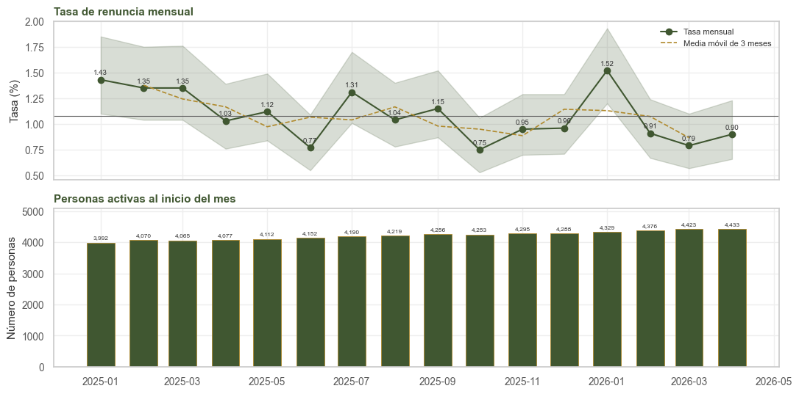
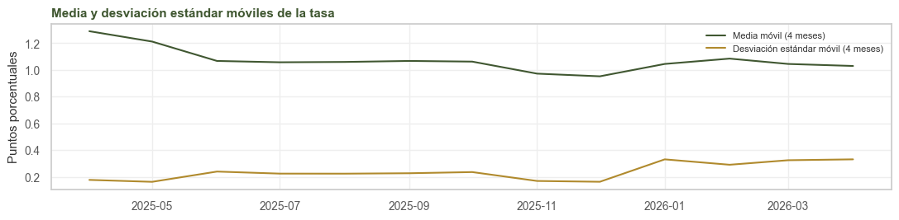
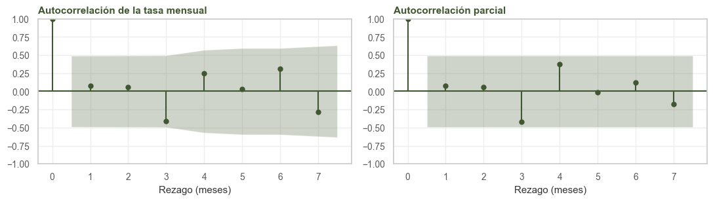
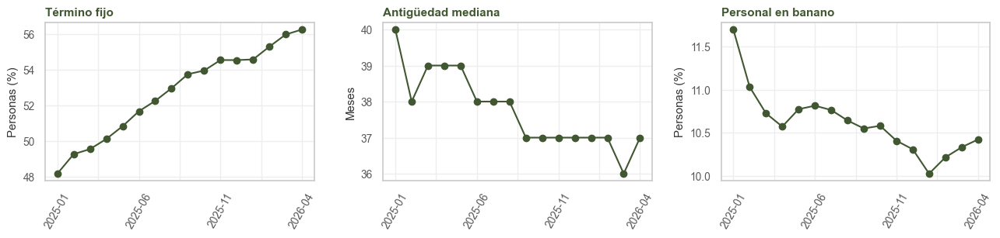
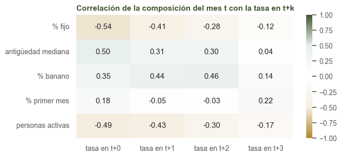
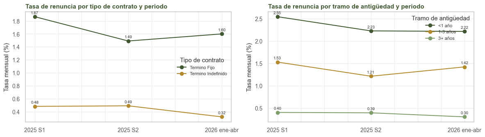
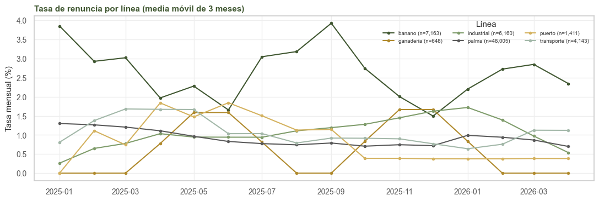

5. EDA temporal#
Alcance
Este capítulo usa solo el entrenamiento: 16 meses, de enero de 2025 a abril de 2026. Con una serie tan corta las pruebas tienen poca potencia, y sus resultados se leen como indicios.
import sys
import warnings
import numpy as np
import pandas as pd
import matplotlib.pyplot as plt
import seaborn as sns
from scipy import stats
from statsmodels.tsa.stattools import adfuller, kpss
from statsmodels.graphics.tsaplots import plot_acf, plot_pacf
from statsmodels.formula.api import logit
sys.path.insert(0, '.')
warnings.filterwarnings('ignore')
from comun import (cargar, particion, estilo, tasa_ic, etiquetar, puntos, OBJETIVO, NUM,
PREDICTORAS, NOMBRE, VERDE, ORO, GRIS, BORDE)
estilo()
tr, _ = particion(cargar())
serie = tasa_ic(tr, 'mes')
serie.index = pd.PeriodIndex(serie.index, freq='M')
5.1. La serie mensual#
Primero verificamos la variable temporal: formato, frecuencia, huecos y duplicados.
meses = pd.PeriodIndex(tr.mes.unique(), freq='M').sort_values()
esperados = pd.period_range(meses.min(), meses.max(), freq='M')
huecos = sorted(set(esperados) - set(meses)) or 'ninguno'
filas_mes = tr.groupby('mes').size()
print('formato: AAAA-MM, sin zona horaria (foto del día 1 de cada mes) | frecuencia: mensual')
print(f'meses: {len(meses)} de {len(esperados)} esperados entre {meses.min()} y {meses.max()} | '
f'huecos: {huecos}')
print(f'persona-mes repetidas: {int(tr.duplicated(["persona_id", "mes"]).sum())}')
print(f'filas por mes: mínimo {filas_mes.min():,}, máximo {filas_mes.max():,}')
formato: AAAA-MM, sin zona horaria (foto del día 1 de cada mes) | frecuencia: mensual
meses: 16 de 16 esperados entre 2025-01 y 2026-04 | huecos: ninguno
persona-mes repetidas: 0
filas por mes: mínimo 3,992, máximo 4,433
La serie es mensual y regular, sin huecos ni duplicados. El número de personas activas crece de forma suave (de 3.992 a 4.433), sin saltos que indiquen cargas incompletas.
x = serie.index.to_timestamp()
fig, ax = plt.subplots(2, 1, figsize=(11, 5.5), sharex=True)
ax[0].plot(x, serie['tasa_%'], marker='o', color=VERDE, label='Tasa mensual')
ax[0].fill_between(x, serie.ic_bajo, serie.ic_alto, alpha=0.2, color=VERDE)
puntos(ax[0], x, serie['tasa_%'])
ax[0].plot(x, serie['tasa_%'].rolling(3, center=True).mean(), ls='--', c=ORO, lw=1.2,
label='Media móvil de 3 meses')
ax[0].axhline(100 * tr[OBJETIVO].mean(), c=GRIS, lw=0.8)
ax[0].legend(fontsize=8)
ax[0].set(title='Tasa de renuncia mensual', ylabel='Tasa (%)')
barras = ax[1].bar(x, serie.filas, width=20, color=VERDE, **BORDE)
etiquetar(ax[1], barras, '{:,.0f}', fontsize=6)
ax[1].set(title='Personas activas al inicio del mes', ylabel='Número de personas')
plt.tight_layout()
plt.show()
fig, ax = plt.subplots(figsize=(11, 2.8))
ax.plot(x, serie['tasa_%'].rolling(4).mean(), label='Media móvil (4 meses)')
ax.plot(x, serie['tasa_%'].rolling(4).std(), label='Desviación estándar móvil (4 meses)')
ax.set(title='Media y desviación estándar móviles de la tasa', ylabel='Puntos porcentuales')
ax.legend(fontsize=8)
plt.tight_layout()
plt.show()
serie[['filas', 'renuncias', 'tasa_%', 'ic_bajo', 'ic_alto']].T


| mes | 2025-01 | 2025-02 | 2025-03 | 2025-04 | 2025-05 | 2025-06 | 2025-07 | 2025-08 | 2025-09 | 2025-10 | 2025-11 | 2025-12 | 2026-01 | 2026-02 | 2026-03 | 2026-04 |
|---|---|---|---|---|---|---|---|---|---|---|---|---|---|---|---|---|
| filas | 3992.00 | 4070.00 | 4065.00 | 4077.00 | 4112.00 | 4152.00 | 4190.00 | 4219.00 | 4256.00 | 4253.00 | 4295.00 | 4288.00 | 4329.00 | 4376.00 | 4423.00 | 4433.00 |
| renuncias | 57.00 | 55.00 | 55.00 | 42.00 | 46.00 | 32.00 | 55.00 | 44.00 | 49.00 | 32.00 | 41.00 | 41.00 | 66.00 | 40.00 | 35.00 | 40.00 |
| tasa_% | 1.43 | 1.35 | 1.35 | 1.03 | 1.12 | 0.77 | 1.31 | 1.04 | 1.15 | 0.75 | 0.95 | 0.96 | 1.52 | 0.91 | 0.79 | 0.90 |
| ic_bajo | 1.10 | 1.04 | 1.04 | 0.76 | 0.84 | 0.55 | 1.01 | 0.78 | 0.87 | 0.53 | 0.70 | 0.71 | 1.20 | 0.67 | 0.57 | 0.66 |
| ic_alto | 1.85 | 1.75 | 1.76 | 1.39 | 1.49 | 1.09 | 1.70 | 1.40 | 1.52 | 1.06 | 1.29 | 1.29 | 1.93 | 1.24 | 1.10 | 1.23 |
5.2. Estacionalidad#
Una descomposición STL con periodo anual necesita al menos dos ciclos completos (24 meses) y aquí hay 16, por lo que la componente estacional no se puede estimar. Comparamos en cambio los cuatro meses que aparecen en los dos años (enero a abril de 2025 y de 2026).
d = tr.assign(anio=tr.mes.str[:4], m=tr.mes.str[5:].astype(int))
dos_anios = d[d.m <= 4].pivot_table(index='m', columns='anio', values=OBJETIVO, aggfunc='mean')
dos_anios = dos_anios * 100
dos_anios.index = ['ene', 'feb', 'mar', 'abr']
print(dos_anios.round(2).to_string())
rho = stats.spearmanr(dos_anios['2025'], dos_anios['2026'])[0]
print(f'\ncorrelación de rangos entre los dos años (4 meses): {rho:.2f}')
# enero frente al resto del año
d['enero'] = d.mes.str[5:] == '01'
chi, pv = stats.chi2_contingency(pd.crosstab(d.enero, d[OBJETIVO]).to_numpy(), correction=False)[:2]
t_enero = tasa_ic(d, d.enero.map({True: 'enero', False: 'resto del año'}))
razon = t_enero.loc['enero', 'tasa_%'] / t_enero.loc['resto del año', 'tasa_%']
print(t_enero.to_string())
print(f'chi-cuadrado enero frente al resto: {chi:.1f}, p = {pv:.4f}; razón de tasas {razon:.2f}')
anio 2025 2026
ene 1.43 1.52
feb 1.35 0.91
mar 1.35 0.79
abr 1.03 0.90
correlación de rangos entre los dos años (4 meses): 0.40
filas renuncias tasa_% ic_bajo ic_alto
enero
enero 8321 123 1.48 1.24 1.76
resto del año 59209 607 1.03 0.95 1.11
chi-cuadrado enero frente al resto: 14.0, p = 0.0002; razón de tasas 1.44
Enero es el mes más alto en los dos años (1,48 % frente a 1,03 %). Es coherente con el calendario laboral colombiano: la prima de diciembre y las vacaciones de fin de año se cobran antes de cambiar de trabajo. Con dos repeticiones no es una estacionalidad demostrada, pero justifica incluir el mes del año como variable del modelo.
5.3. Estacionariedad y autocorrelación#
Las pruebas ADF y KPSS tienen hipótesis nulas opuestas: ADF supone raíz unitaria (serie no estacionaria) y KPSS supone estacionariedad. Leerlas juntas evita tomar un “no rechazo” como una confirmación.
y_serie = serie['tasa_%'].to_numpy()
adf = adfuller(y_serie, maxlag=2, autolag=None)
kp = kpss(y_serie, regression='c', nlags=2)
print(f'ADF: estadístico {adf[0]:.2f}, p = {adf[1]:.3f} (H0: raíz unitaria)')
print(f'KPSS: estadístico {kp[0]:.2f}, p = {kp[1]:.3f} '
f'(H0: estacionaria; p acotado entre 0,01 y 0,10 por la tabla)')
fig, ax = plt.subplots(1, 2, figsize=(11, 3.2))
plot_acf(y_serie, lags=7, ax=ax[0], color=VERDE, vlines_kwargs={'colors': VERDE})
plot_pacf(y_serie, lags=7, ax=ax[1], method='ywm', color=VERDE, vlines_kwargs={'colors': VERDE})
ax[0].set(title='Autocorrelación de la tasa mensual', xlabel='Rezago (meses)')
ax[1].set(title='Autocorrelación parcial', xlabel='Rezago (meses)')
plt.tight_layout()
plt.show()
ADF: estadístico -3.65, p = 0.005 (H0: raíz unitaria)
KPSS: estadístico 0.35, p = 0.097 (H0: estacionaria; p acotado entre 0,01 y 0,10 por la tabla)

ADF rechaza la raíz unitaria (p = 0,005) y KPSS no rechaza la estacionariedad (p ≈ 0,10); ambas apuntan a una serie estacionaria en nivel, que oscila alrededor de su media sin tendencia. Con 16 puntos, las bandas de la autocorrelación son anchas (±0,5) y ninguna la supera: no hay evidencia de que la tasa agregada de un mes anticipe la del siguiente, y no se agregan rezagos de la tasa global como variables.
Tampoco hay un cambio de régimen visible: la serie no muestra saltos de nivel y las dos pruebas son compatibles con una media constante. Con 16 puntos no se puede fechar un punto de cambio con precisión, y una diferencia moderada de nivel pasaría inadvertida. El test (0,92 % mensual) queda algo por debajo del entrenamiento (1,08 %); su efecto sobre el modelo se revisa en los residuos del capítulo 7. El efecto de calendario identificado es el de enero (sección 5.2).
5.4. Deriva de la población#
Para un corte temporal, el riesgo principal es que la población cambie: si el test tiene otra mezcla de contratos o de antigüedades, el modelo se evalúa sobre personas distintas de las que usó para aprender. Lo medimos con el índice de estabilidad poblacional (PSI) entre el primer semestre de 2025 y los meses de 2026 del entrenamiento. Con \(a_j\) y \(b_j\) la proporción de filas en la categoría (o el tramo) j en cada periodo,
que es una versión simétrica de la divergencia de Kullback-Leibler. La regla usual es: PSI < 0,1 estable, de 0,1 a 0,25 cambio moderado y > 0,25 cambio grande.
def psi(a, b):
pa = a.value_counts(normalize=True)
pb = b.value_counts(normalize=True)
categorias = pa.index.union(pb.index)
pa = pa.reindex(categorias).fillna(0) + 1e-4
pb = pb.reindex(categorias).fillna(0) + 1e-4
return float(((pa - pb) * np.log(pa / pb)).sum())
inicio = tr[tr.mes <= '2025-06']
fin = tr[tr.mes >= '2026-01']
filas = []
for v in PREDICTORAS:
a, b = inicio[v], fin[v]
if v in NUM:
cortes = np.unique(np.quantile(tr[v].dropna(), np.linspace(0, 1, 11)))
a = pd.cut(a, cortes, include_lowest=True)
b = pd.cut(b, cortes, include_lowest=True)
filas.append({'variable': v, 'PSI': psi(a.astype(str), b.astype(str))})
deriva = pd.DataFrame(filas).set_index('variable').sort_values('PSI', ascending=False)
deriva['lectura'] = pd.cut(deriva.PSI, [-1, 0.1, 0.25, 99],
labels=['estable', 'moderado', 'grande'])
deriva.round(3)
| variable | PSI | lectura |
|---|---|---|
| antig_meses | 0.355 | grande |
| sociedad | 0.174 | moderado |
| ubicacion | 0.038 | estable |
| oficio | 0.016 | estable |
| proceso_planta | 0.015 | estable |
| contrato | 0.012 | estable |
| traslado_12m | 0.006 | estable |
| area_funcional | 0.004 | estable |
| familia_cargo | 0.003 | estable |
| nivel | 0.003 | estable |
| linea | 0.003 | estable |
| edad | 0.002 | estable |
| tipo_unidad | 0.001 | estable |
| tipo_costos | 0.001 | estable |
| genero | 0.001 | estable |
| estado_civil | 0.000 | estable |
| primer_mes | 0.000 | estable |
| reingreso | 0.000 | estable |
por_mes = tr.groupby('mes')
fig, ax = plt.subplots(1, 3, figsize=(13, 3.2))
(100 * por_mes.contrato.apply(lambda z: (z == 'Termino Fijo').mean())).plot(ax=ax[0], marker='o')
ax[0].set(title='Término fijo', xlabel='', ylabel='Personas (%)')
por_mes.antig_meses.median().plot(ax=ax[1], marker='o')
ax[1].set(title='Antigüedad mediana', xlabel='', ylabel='Meses')
(100 * por_mes.linea.apply(lambda z: (z == 'banano').mean())).plot(ax=ax[2], marker='o')
ax[2].set(title='Personal en banano', xlabel='', ylabel='Personas (%)')
for a in ax:
a.tick_params(axis='x', rotation=60)
plt.tight_layout()
plt.show()

Dos variables superan el umbral de estabilidad, en ambos casos por razones distintas a un cambio en la composición del personal:
antig_meses(PSI 0,36) refleja el envejecimiento del panel. Una cohorte grande que en 2025 tenía entre 66 y 85 meses (15 % de las filas) pasó en 2026 al tramo de 85 a 108: son las mismas personas con un año más, y la mediana casi no cambia (de 40 a 37 meses). En el test habrá más personas con antigüedad alta, donde el riesgo es menor y más estable.sociedad(PSI 0,17) corresponde a un traslado de nómina: S09 pasa de 3,8 % a 0,1 % de las filas y S05 sube de 6,2 % a 10,0 %, mientras la línea de negocio se mantiene (PSI 0,003). Si una sociedad desaparece en el test, el modelo pierde su estimación; conviene que no dependa solo de esta variable.
5.5. Composición del mes y tasa futura#
Agregamos por mes algunas características de la población y las correlacionamos con la tasa del mismo mes y de los tres siguientes: una correlación cruzada entre cada predictora agregada y el objetivo con rezagos de 0 a 3 meses, \( ho_k = \operatorname{corr}(x_t, y_{t+k})\). Con 16 meses, una correlación debe superar ±0,5 aproximadamente para distinguirse del azar.
agregado = pd.DataFrame({
'% fijo': 100 * por_mes.contrato.apply(lambda z: (z == 'Termino Fijo').mean()),
'antigüedad mediana': por_mes.antig_meses.median(),
'% banano': 100 * por_mes.linea.apply(lambda z: (z == 'banano').mean()),
'% primer mes': 100 * por_mes.primer_mes.mean(),
'personas activas': por_mes.size(),
})
tasa_mes = 100 * por_mes[OBJETIVO].mean()
cruzada = pd.DataFrame({v: [agregado[v].corr(tasa_mes.shift(-k)) for k in range(4)]
for v in agregado}, index=[f'tasa en t+{k}' for k in range(4)]).T
fig, ax = plt.subplots(figsize=(7, 3.2))
sns.heatmap(cruzada, annot=True, fmt='.2f', cmap='oro_verde', center=0, vmin=-1, vmax=1, ax=ax)
ax.set(title='Correlación de la composición del mes t con la tasa en t+k')
plt.tight_layout()
plt.show()

Las correlaciones más altas están en el límite del azar y tienen el signo contrario al efecto individual: los meses con más término fijo tienen menos renuncias (−0,54), aunque a nivel de persona el término fijo renuncia 3,7 veces más. La diferencia corresponde a una falacia ecológica: a lo largo de la ventana crecen la población activa y la proporción de término fijo mientras la tasa desciende levemente. La composición agregada del mes no anticipa la tasa, y no se incluyen rezagos agregados.
5.6. Deriva del concepto#
El PSI mide si cambian las predictoras (covariate shift). Aquí se examina si cambia la relación entre las predictoras y la renuncia (concept drift), comparando la tasa por contrato y por tramo de antigüedad en tres periodos del entrenamiento.
indice_mes = tr.mes.map(lambda m: int(m[:4]) * 12 + int(m[5:]))
t = tr.assign(
periodo=pd.cut(indice_mes, [0, 2025 * 12 + 6, 2025 * 12 + 12, 10**6],
labels=['2025 S1', '2025 S2', '2026 ene-abr']),
antig_t=pd.cut(tr.antig_meses, [-1, 11, 35, 1e4], labels=['<1 año', '1-3 años', '3+ años']),
)
fig, ax = plt.subplots(1, 2, figsize=(12, 3.5))
for a, v in zip(ax, ['contrato', 'antig_t']):
tabla = t.pivot_table(index='periodo', columns=v, values=OBJETIVO, aggfunc='mean',
observed=True) * 100
tabla.plot(ax=a, marker='o')
for columna in tabla:
puntos(a, range(len(tabla)), tabla[columna])
a.set(title=f'Tasa de renuncia por {NOMBRE[v]} y periodo', ylabel='Tasa mensual (%)', xlabel='')
a.legend(fontsize=8, title=NOMBRE[v].capitalize())
plt.tight_layout()
plt.show()
def razon_fijo_indefinido(z):
fijo = z[z.contrato == 'Termino Fijo'][OBJETIVO].mean()
indefinido = z[z.contrato == 'Termino Indefinido'][OBJETIVO].mean()
return fijo / indefinido
razones = t.groupby('periodo', observed=True).apply(razon_fijo_indefinido)
print('razón de tasas fijo / indefinido por periodo:', razones.round(2).to_dict())
# prueba de razón de verosimilitud para la interacción contrato x periodo
datos = t.rename(columns={OBJETIVO: 'y'})
con_interaccion = logit('y ~ C(contrato) * C(periodo)', data=datos).fit(disp=0)
sin_interaccion = logit('y ~ C(contrato) + C(periodo)', data=datos).fit(disp=0)
lr = 2 * (con_interaccion.llf - sin_interaccion.llf)
gl = con_interaccion.df_model - sin_interaccion.df_model
print(f'razón de verosimilitud para la interacción contrato × periodo: {lr:.2f} con {gl:.0f} gl, '
f'p = {stats.chi2.sf(lr, gl):.3f}')

razón de tasas fijo / indefinido por periodo: {'2025 S1': 3.87, '2025 S2': 3.04, '2026 ene-abr': 5.0}
razón de verosimilitud para la interacción contrato × periodo: 3.91 con 2 gl, p = 0.141
La razón de tasas entre término fijo e indefinido varía entre 3,0 y 5,0 según el periodo, pero la interacción contrato × periodo no es significativa (p = 0,14): no hay evidencia de que la relación haya cambiado, y la variación es compatible con el ruido de periodos con pocas renuncias. La forma del riesgo por antigüedad también se mantiene, con el primer año como el tramo de mayor riesgo. Esta estabilidad es un supuesto necesario para aplicar el modelo a meses posteriores.
5.7. Series por línea de negocio#
Como una persona renuncia a lo sumo una vez, no tiene sentido una serie por persona. La heterogeneidad temporal se examina por línea de negocio.
fig, ax = plt.subplots(figsize=(11, 3.8))
for linea, z in tr.groupby('linea'):
tasa_linea = 100 * z.groupby('mes')[OBJETIVO].mean()
fechas = pd.PeriodIndex(tasa_linea.index, freq='M').to_timestamp()
ax.plot(fechas, tasa_linea.rolling(3, min_periods=1).mean(), marker='.',
label=f'{linea} (n={len(z):,})')
ax.set(title='Tasa de renuncia por línea (media móvil de 3 meses)', ylabel='Tasa mensual (%)')
ax.legend(fontsize=7, ncol=3, title='Línea')
plt.tight_layout()
plt.show()
linea_mes = tr.groupby(['linea', 'mes'])[OBJETIVO].mean().unstack().mul(100)
print('media y desviación mensual de la tasa por línea (%):')
print(pd.DataFrame({'media': linea_mes.mean(1), 'desv. entre meses': linea_mes.std(1)}).round(2)
.to_string())

media y desviación mensual de la tasa por línea (%):
media desv. entre meses
linea
banano 2.55 1.14
ganaderia 0.61 1.09
industrial 1.05 0.46
palma 0.88 0.26
puerto 0.84 1.04
transporte 1.06 0.61
Banano tiene la tasa más alta (2,55 % mensual) y también la más variable (desviación de 1,14 puntos entre meses); palma es la más estable (0,26). Las líneas pequeñas (ganadería, puerto) tienen desviaciones grandes por tener pocos casos al mes. Las líneas difieren en nivel, y ninguna muestra una tendencia sostenida.
5.8. Síntesis#
La tasa mensual oscila alrededor de 1 %, sin tendencia y con varianza estable. Enero es el pico en los dos años (1,48 % frente a 1,03 %; chi-cuadrado p = 0,0002), por lo que el modelo incluye el mes del año, con la advertencia de que solo hay dos eneros.
ADF y KPSS coinciden en que la serie es estacionaria en nivel, y no hay autocorrelación detectable.
La deriva de la población se debe al envejecimiento del panel y a un traslado de nómina; contrato, línea, oficio y edad son estables. Se espera que el test se parezca al entrenamiento, con más peso en antigüedades altas.
No hay evidencia de deriva del concepto: la relación entre contrato y renuncia y la forma del riesgo por antigüedad se mantienen entre periodos.